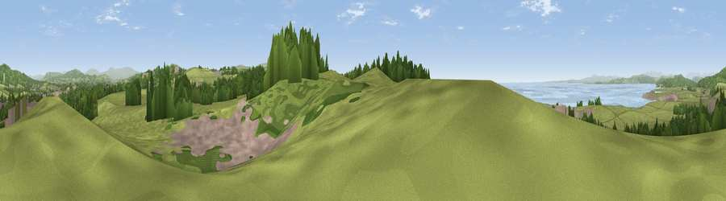

Viewpoint near Bolton-le-Sands
#9116 in England · top 34% of its area beats it · near Bolton-le-SandsThe view, rendered

A 360° render of this exact spot computed from the terrain model, tree cover and land cover — summer colours, afternoon light, calibrated against photographs of famous viewpoints. Real trees, hedges and buildings will differ in detail.
The panorama
Grey silhouette: terrain skyline in each direction (720 bearings, Earth curvature and refraction included). Dashed green: skyline with trees (+15 m) and buildings (+8 m) as obstacles. Blue strip: how far the ground is visible on each bearing.
Where the view opens
Wedge length = distance to the farthest visible ground on that bearing (vegetation-aware). Rings at 10, 25 and 50 km.
What fills the view
59% grassland · 22% woodland · 10% built-up · 8% water
Angular shares of the visible panorama (visual magnitude), not map area. Landscape diversity 0.49 (0–1 Shannon).
Key numbers
More beautiful places nearby
The staircase of upgrades: each row has a higher view potential than everything closer. Driving times are estimates from straight-line distance, calibrated against real road routing — check an actual route before setting out.
| Place | Direction | Drive | Score |
|---|---|---|---|
| Viewpoint near Nether Kellet | E · 2 km | ~5 min | 69.7 |
| Viewpoint near Over Kellet | ENE · 2 km | ~6 min | 73.0 |
| Viewpoint near Over Kellet | E · 3 km | ~7 min | 77.4 |
| Warton Crag | N · 4 km | ~9 min | 83.2 |
| Viewpoint near Grange-over-Sands | NW · 13 km | ~24 min | 83.4 |
| Viewpoint near Cartmel | NW · 17 km | ~29 min | 87.0 |
| Viewpoint near Cartmel | NW · 17 km | ~30 min | 87.2 |
| Viewpoint near Finsthwaite | NNW · 22 km | ~36 min | 90.3 |
54.11512, -2.78091 · source: screening · position refined by local search. Computed location — check access rights before visiting.